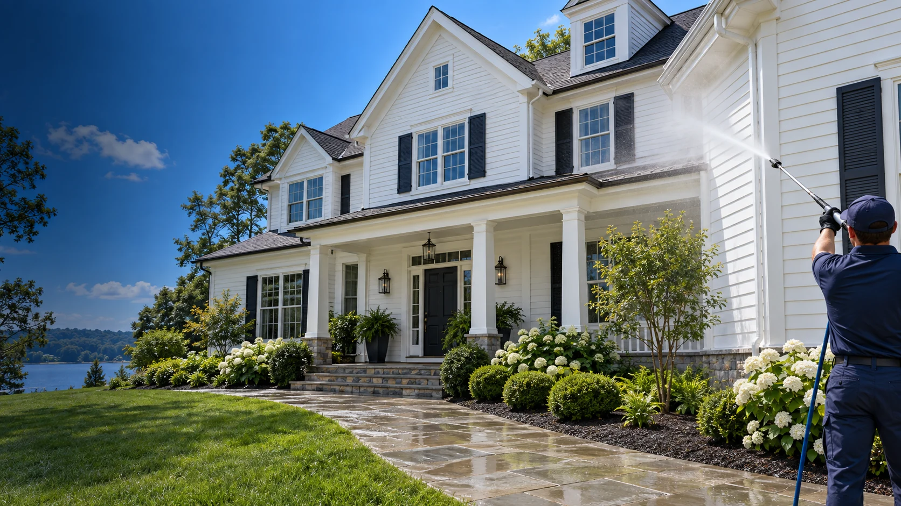
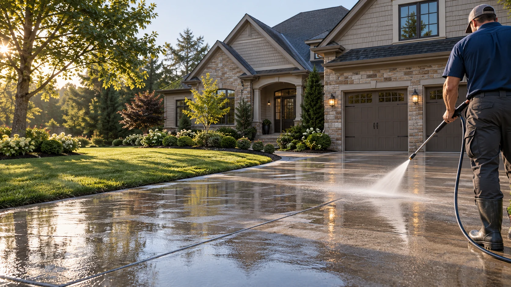
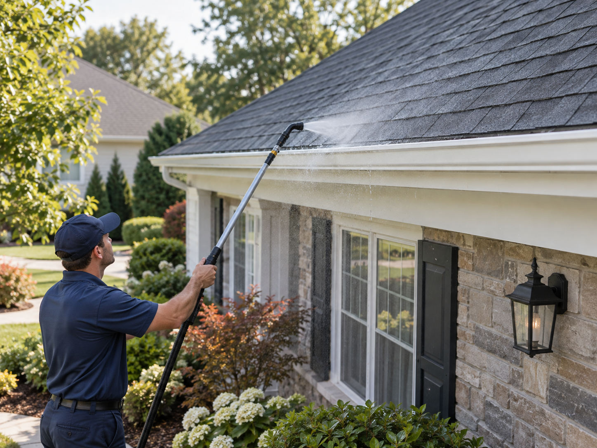
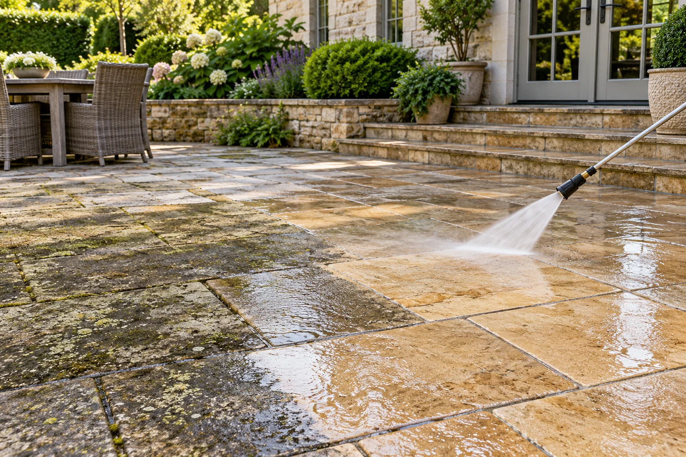

House soft washing
Our low-pressure soft wash lifts algae, pollen, and everyday buildup from siding and trim. We choose the method for your material and protect surrounding plants.
Request a quote →WHAT WE WASH
Every surface gets the right method and careful attention—never a one-size-fits-all blast.

Our low-pressure soft wash lifts algae, pollen, and everyday buildup from siding and trim. We choose the method for your material and protect surrounding plants.
Request a quote →
Pressure washing restores concrete driveways, paths, and entrance areas. We work systematically for an even finish and inspect stubborn marks before setting expectations.
Request a quote →
Careful roof soft washing and gutter cleaning remove buildup with attention to your roofing material, drainage, and landscaping.
Request a quote →
Refresh patios, pool decks, fences, and outdoor gathering spaces. We match our equipment and cleaning approach to concrete, pavers, and other exterior materials.
Request a quote →THE WATERWORX DIFFERENCE
We take time to understand your surfaces, explain the plan, and treat your property with care from start to finish.
WHY CHOOSE WATERWORX?
You’re trusting someone with your home. Here’s how we make that decision feel easy.
Concrete and delicate siding need different treatment. We assess the material first and choose pressure washing or soft washing to suit the surface.
We plan around landscaping, exterior fixtures, and nearby belongings. Careful preparation is part of the job, from arrival through cleanup.
Your estimate explains the areas included and the work proposed. Any changes are discussed with you before extra work begins.
We agree on an arrival window, share preparation instructions, and keep you informed so the visit fits into your day.
Tell us about your property, your concerns, and the results you want. We’ll explain the plan before work begins.
We check the cleaned areas with you and explain any remaining marks. Some stains need specialist treatment; we set realistic expectations from the start.
A SIMPLE PATH TO A CLEANER HOME
Tell us what needs cleaning. We review the surfaces and send a clear estimate.
We agree on a convenient time and explain how to prepare your property.
Our crew completes the clean and walks through the results with you.
SEE WHAT A THOROUGH CLEAN CAN DO
Explore the same view before and after a surface refresh.
Illustrative examples. Results vary by surface and condition.
THE WATERWORX EXPERIENCE
Tell us what you want cleaned and share photos if you have them.
We recommend the right method and explain what is included in your quote.
A cleaner driveway, siding, patio, or entry makes the whole property feel renewed.
YOUR QUESTIONS, ANSWERED
A little clarity makes booking easier.
Pressure washing uses higher water pressure on suitable hard surfaces such as concrete. Soft washing uses lower pressure and a surface-specific cleaning approach for more delicate materials.
We consider the surface type, area, access, and condition. Share your address and the areas you want cleaned so we can explain what is included in your estimate.
We’ll send instructions for your visit. Usually, that means moving small outdoor items, closing windows, and keeping pets inside while work is underway.
Results depend on the material and the stain. We’ll discuss difficult marks and any permanent discoloration before we start rather than promise an unrealistic result.
Yes. Tell us about the house, driveway, patio, or other surfaces you want refreshed. We can quote them together and plan a convenient visit.
YOUR NEXT CLEAN STARTS HERE
Tell us about your exterior and we’ll help you choose the right cleaning plan.
Get a Free Quote →GET YOUR FREE QUOTE
Share a few details and we’ll get back to you with a quick, straightforward estimate.
Questions? Share them in the project details.